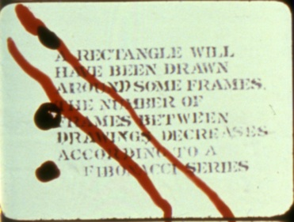

Presentations: Carlos Kase

Though rarely seen, and even less frequently written about, the collaborative film projects of Roberta Friedman and Grahame Weinbren represent pioneering artistic experiments with form, authorship, and ideology within the avant-garde cinema of Southern California. Incredibly idiosyncratic films like Murray and Max Talk About Money (1980) and Future Perfect (1979) almost defy description in their distinctive amalgamation of systematicity, chance, and authorial control that resist the conventional avant-garde genre categories, such as “structural film,” generally associated with relatedly complex work in cinema.
The films of Friedman and Weinbren often suggest an underlying pattern in their construction, though they do not reveal their generative organizational systems in any clear way. Instead, these works depend upon a hybrid mode of authorship that blends labor intensive organizational practices (as seen in the incredibly intricate sound/image editing patterns of both films) with other less deliberate structures, such as Cagean chance procedures or the incorporation of performance. In addition to their use of seemingly opposed organizational strategies – e.g. deliberate structural patterning vs. indeterminacy – films such as Murray and Max incorporate other methodologies that further complicate their analysis, including significant, yet partially occluded elements of ideological critique, documentary contingency, and conceptual humor.
Despite their inscrutability, the moving image works of Friedman and Weinbren nevertheless communicate a powerful aesthetic self-assurance that evinces a comprehensive command of the medium’s plastic, rhetorical, and ideological registers. For my presentation at Alternative Projections I plan to investigate the hybrid artistic strategies of Friedman and Weinbren in all their enigmatic complexity.
Carlos Kase: In 2009 Carlos Kase completed his dissertation, “A Cinema of Anxiety: American Experimental Film in the Realm of Art (1965-75)” at the University of Southern California. This project, which is currently being revised into a manuscript, considers the work of experimental filmmakers in relation to a range of confrontational actions in art and media of the era. His ongoing research concerns the overlapping aesthetic, historical, and political registers of experimental cinema, documentary, art history, performance, and popular music within American culture. He is now Assistant Professor of Film Studies at the University of North Carolina Wilmington, where he teaches courses on American film history, the avant-garde, and the counterculture of the 1960s.
Storm, Stress, and Structure: The Films of Roberta Friedman and Grahame Weinbren
This presentation is part of the panel entitled High Concepts: Cross Sections of Art and Film, being held on Sunday November 14, 2010 11:30 am - 2:00 pm in the Eileen Norris Cinema Theatre.
Left: Future Perfect (1980) by Roberta Friedman and Grahame Weinbren
Image courtesy of the Academy Film Archive
